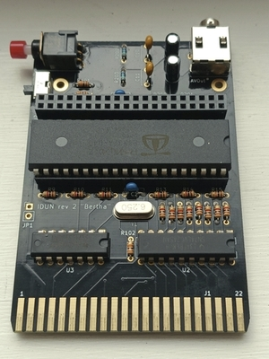
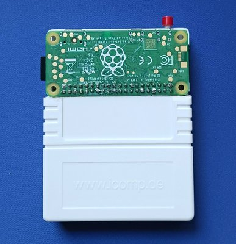
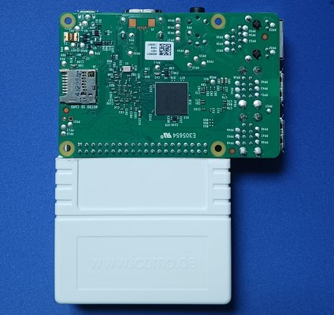
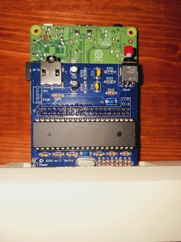
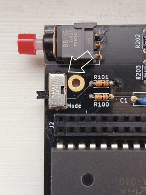
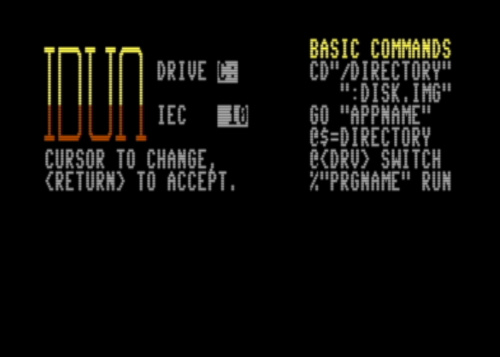

Home
Idun for the Commodore 128 and C64¶
This is the home of the idun-cartridge for the C128/64. Here you will find the latest software, along with source code, sample applications, and other content.
This innovative cartridge integrates a Raspberry Pi to provide a fast hardware interface, enabling features such as virtual disks, networking, and the ability to run modern applications. Users can interact with the cartridge via BASIC commands, a web-based file browser, or SSH, and the project supports developing new software in 6502 Assembly, Lua, and even C and Z80 Assembly. There's an optional Commodore Kernal patch that allow native software to access cartridge functionality at high speeds, effectively turning the cartridge into a "hard drive" for Commodore.
What does it do? It's easier to show in a demo, and there are many demo videos on YouTube.
There's also a Discord Server for the project. This is for idun-project discussion, new user advice, beta testing new features, and general retro-computing banter with a Commodore bias.
Hardware¶
The idun-cartridge uses a Propeller 1 micro-controller to provide a fast hardware interface between the Commodore and a Raspberry Pi ("RPi") that runs a customized Linux OS. The cartridge is designed to work and fit best with the Raspberry Pi Zero 2. However, any recent Raspberry Pi can be made to work.
The first set of photos show the idun-cartridge with RPi Zero 2 fitted. As you can see, a standard-sized C64/128 cartridge case can be hacked to cover the board, but leave the RPi, ports, and button accessible.

A Model B RPi will also fit on an idun-cartridge, as this photo shows. For both Model Zero and Model B, the RPi is fitted on top of the idun-cartridge and upside-down. For the Model B, a case or other support is essential because of the weight.
You can also fit a Model A RPi, but the headers must be relocated to the opposite side of both the idun-cartridge PCB and the RPi itself. In this case, the RPi will be on the bottom (under the idun-cartridge), as shown here connected to a flat C128.

Support the project¶
The best way to support the project is to buy a hardware kit from the online store. The kit comes with everything needed to assemble the idun-cartridge, except for the Raspberry Pi, which you will need to obtain yourself. Only basic soldering skills are needed, since the PCB is strictly through-hole components.
Quick start¶
Download SD Image¶
You can download the customized Arch Linux OS image and flash it to a microSD card.
- Ensure you have a suitable SD card compatible with your Raspberry Pi and at least 4GB (recommend 16 GB).
- Download Image
- Use Raspberry Pi Imager or a similar program to write image to SD card.
Your microSD is now ready to use with your idun-cartridge. To expand the file system or setup networking, follow the additional instructions in setup-rpi.md.
Power¶
It is recommended that you power the RPi externally from a USB power supply. The jumper (JP1) that allows power to come from the Commodore is not installed by default, and only suited for the RPi Zero 2. Even then, it makes it too easy to turn off the Commodore and Raspberry Pi without first shutting it down via the button. Plus, it is nice to be able to access the cartridge using the web filebrowser, emulation, or ssh while the Commodore is switched off.
Cartridge Mode & Reset¶

The idun-cartridge has a single "big red button" with dual use. Press and release immediately to Reset everything, including rebooting your Commodore. Press and hold for at least 3 seconds to shutdown your cartridge, which is necessary before powering down.
As of release v1.2.0, the idun-cartridge has two different modes, controlled by the setting of the Mode toggle switch. When the switch is "Off" (i.e. not switched to the "Mode" position), the idun-cartridge works on the C128 in its native mode. However, when switched to "Mode", a different software stack is selected as specified by the [mode] settings in the configuration file.
With the default configuration file, setting the switch to the "Mode" position enables C64 support. This means that the cartridge can be used on a C64 and that it will boot a C128 into its C64 mode. If you are primarily wanting to play C64 games, then you can most easily do so by launching the arcade.app from BASIC using the command go "arcade".
BASIC commands and launching Apps¶
On initial boot, the cartridge starts BASIC with some utilities for accessing the Idun virtual disks. The screen lets you use the cursor keys to select which virtual drive to use and on which IEC address; the normal default is C:, which is the HOME directory, on IEC device 10. Once you hit "RETURN", you will be in Commodore BASIC.

From the BASIC prompt, you can use any of the several commands that are briefly described in the boot screen. Mainly, you can navigate the virtual disk by using @$ (also F3 on the C128) to load directories, and the cd command to change directories. Any disk image file can be mounted by using cd and prefixing the image file name with a ":". This will switch you automatically to the D: device, which is where the disk is mounted. You can switch back to the C: device using the command @c, and switch to any other virtual disk this way. If you want to load and run a program, just locate it in the directory, place a % in column 1, and "RETURN". This is equivalent to typing % "prgname" on a new line.
The other thing you can do is launch an Idun Application. This is done with the go command, and entering just that will quickly launch the default shell. The default shell is controlled by the configuration file, and is normally setup to load dos.app, which is the idun-shell and an MS-DOS work-a-like. Other applications, such as the Arcade Selector for running games can be started similarly, using go "arcade". Any app on the cartridge can be started this way, and you can create your own using programming tools that run right on the cartridge!
Networking and Managing Files¶
It's well worth connecting your cartridge to your LAN. Convenient file management can be done through the web-based idun-filebrowser at idunpi:8080; it even includes remote file editing and drag&drop. Linux terminal access is also there using an ssh client from any computer. Additionally, you can stream SID tunes and setup file sharing with a Windows computer.
Emulating the Cartridge¶
You can also run idun-vice to experiment with the idun-cartridge software WITHOUT any actual cartridge; just running everything off of the Raspberry Pi.
Configuration¶
Configuration options are available in $HOME/.config/idunrc.toml. There is documentation within that file, but the following hints are also helpful.
- Because of the "special" VDC hi-res graphic modes used by some of the software (e.g.
showvdc), it is very important to set the correct amount of VRAM in the configuration file to either 16kB or 64kB, as appropriate. The setting is the second parameter in the[vdc]section. - Some monitors are picky about how many rows of text they can display in 80 column mode, and how they look when displaying text in interlaced mode. The default is 27 rows, non-interlaced. You can modify this by changing the first parameter in the
[vdc]section, and for interlaced text, the section[vdc_interlace]. Also take a look at themodecommand for changing the number of text rows on demand (not to be confused with the mode switch described above). - If you are using the software with only a Raspberry Pi and Vice (no idun-cartridge hardware), then pay careful attention to disable the configuration file from trying to connect with hardware that isn't there. For details, see the README for idun-vice.
Building Commodore code¶
The idun-cartridge software in this repository is self-hosting. All of the assembly code is built with the acme cross-assembler and everything you need to build and modify it can be done on the cartridge itself. You can perform each of these steps from the Linux prompt:
- Clone this repository to your idun home directory:
git clone https://github.com/idun-project/idun-cartridge cd idun-cartridge && ./setup.sh-installs additional packages such as acme and idun-zcc.cd cbm && make-builds cartridge software and updates thesysdirectory (z:device in the idun-shell)
See the Makefile for details.
Patched Commodore Kernal (Optional)¶
The latest ROM kernal patch can be created easily with idun v1.1.9 and above using the command lua makerom.lua from within the Idun Shell. The patched ROM file(s) will be found in your home directory on the cartridge, and most easily copied using the web file browser or a network command like scp.
The patches to the C128 kernal (U35) overwrite the kernal's support for RS-232 devices. This code is frequently unused by native software anyway. If you also update the C64 kernal (U32), then you lose both RS-232 and cassette tape support in C64 mode.
With the kernal patches in place, things work pretty much the same, except that you can access cartridge functionality easily through standard Commodore ROM kernal routines, rather than loading Idun's own kernel into RAM. So, in theory, native Commodore software that is programmed to use kernal routines for file access can "transparently" access files via the cartridge and at "breakneck speed". Think of it as basically a hard drive for the Commodore without having to go through the Idun software drivers in RAM. So now those drivers can just be overwritten by some program.
You really only need to know about two zero-page variables to control the ROM patch - $9b/$9c (155/156). So you can POKE 155, 10, for example, to setup the cartridge as IEC device #10. And, you can POKE 156, 3 to setup the cartridge to use idun's C: device, which is default configured to the Linux home directory. Using other values let's you easily switch to any Idun device mapped as any IEC device. This opens up the cartridge to native software that can use it for virtually anything without requiring RAM drivers. By the way, setting values in $9b/$9c is just what the little booter program the cartridge starts up with does - When you use the cursor keys to modify the IEC and Idun device selection, you are changing these two memory locations.
Programming applications¶
The idun-cartridge works with many legacy applications. Single-file loaders in particular work very well and load instantly in either C128 or C64 mode. But the point is to enhance both the user and programmer experience with applications that integrate into the idun-cartridge. There are currently 3 well-supported ways to create software for the idun-cartridge.
6502 Assembly¶
This repository includes the acme 6502 cross-assembler, which can be used to build both the contents of this repo and your own programs on the idun-cartridge. You should first decide whether to build a Tool or an App.
- Tools load from the idun-shell using $6D00-$BFFF, have access to the kernel api and the toolbox, and return the user to the idun-shell on exit. They are typically command-line style programs, but can also take over the screen and run interactively. Many examples can be found in the cmd sub-directory
- An App is launched by the kernel at startup using $6000-$BFFF, has access to the kernel API, but not the toolbox unless
sys/toolbox.asmis explicitly included, and return to BASIC, or not at all. They typically take over the machine and reconfigure the hardware as needed. Examples aredos.app(the idun-shell) andarcade.app(the arcade game selector).
It is certainly possible to use other assemblers besides acme; just requiring that the header files acehead.asm and toolhead.asm be ported over to your environment.
Lua Scripting¶
The idun software running on the Raspberry Pi embeds a Lua scripting engine. This allows you to create either Tools or Apps in which much, even a majority of the functionality, is implemented in Lua.
Begin by reading luaref.md. There is sample Lua App code in samples, and the arcade.app is Lua. These can serve as a template for creating your own Lua App.
NOTE: There is a forthcoming tool called mace that will generate new Lua Apps automatically, including all the boiler-plate needed.
C and Z80 Assembly¶
You can create programs that run on the Z80! They launch seamlessly from the idun-shell, and return to it on exit. These are more akin to Apps than Tools, except for their use of the zload command and launching from the idun-shell. The programs can be written in a mixture of C and Z80asm code, and can be built directly on the idun-cartridge. For more information, browse to the idun-zcc repository.
Trivia¶
Idun is the Norse goddess of youth and rejuvenation.